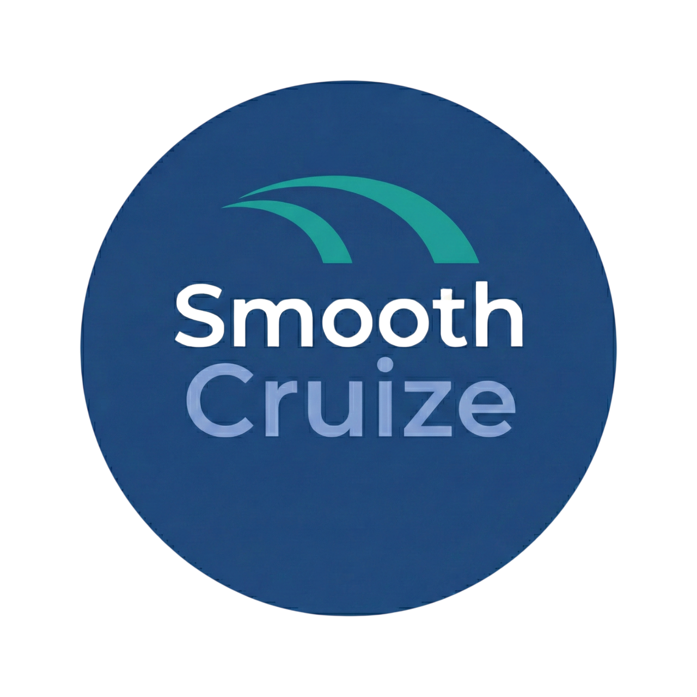
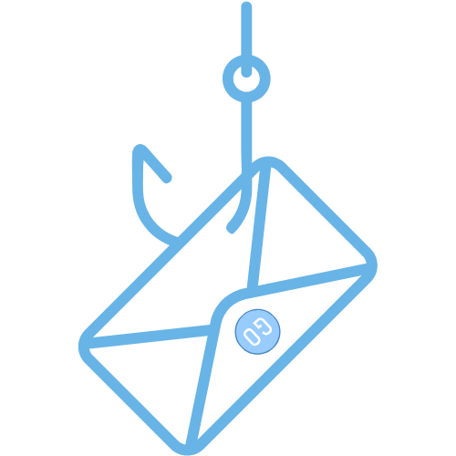
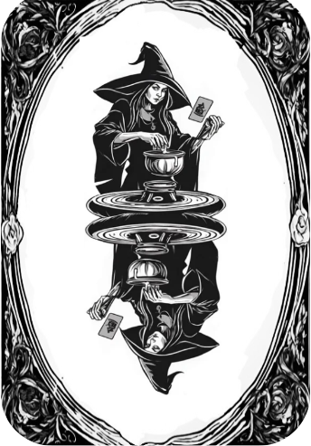

Projects
Project pages.Implementation first.
Each project keeps its own HTML case page and uses the local images already in the portfolio assets.

PictureMe
Image-centered application project with refined direction and backend reliability fixes.

PrintGuard
AI-powered 3D printing defect detector with live monitoring, YOLOv8 detection, Supabase, and printer control.

Smooth Cruize
Backend and database-focused application work with live video stream pothole detection and Supabase schema development.

Osiris
Portfolio software project with product direction, full-stack development, and implementation research.

Gone-Phishin
AI email phishing scanner for Chrome and Gmail using JavaScript, Flask, Python, and the Gemini API.

Blackjack
Playable card game project with project ideation, backlog management, and full-stack application development contribution.